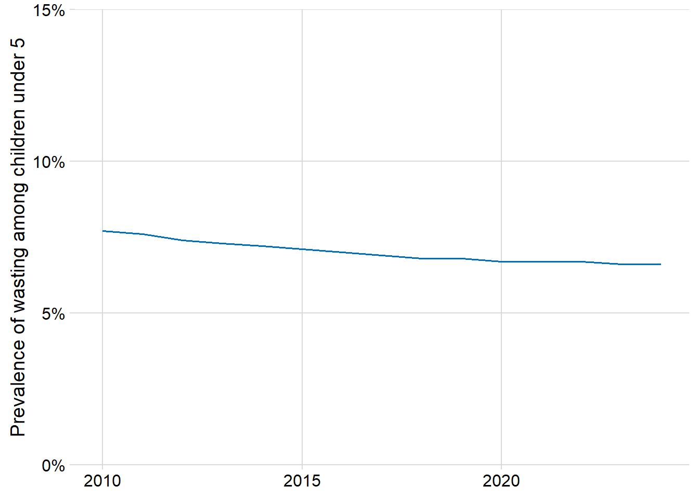
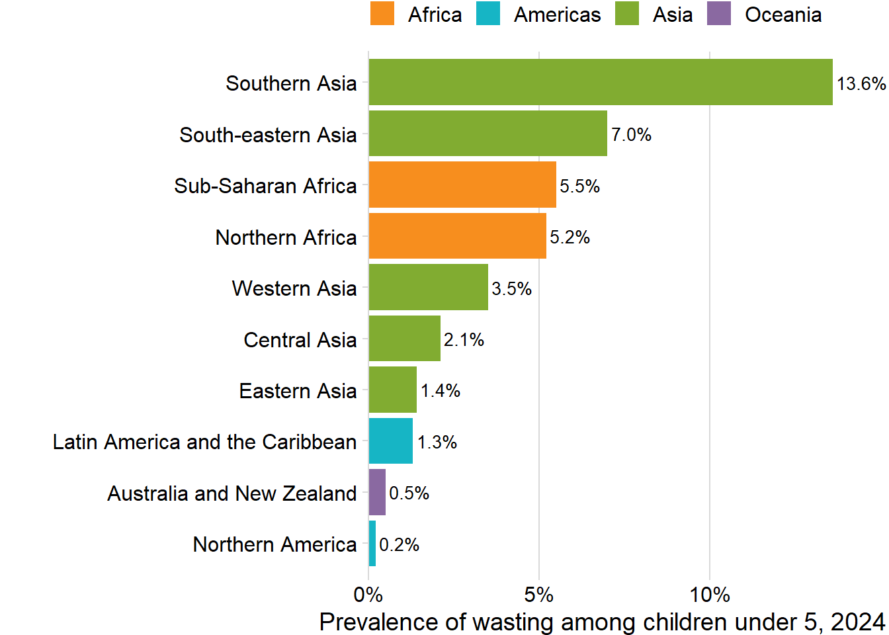
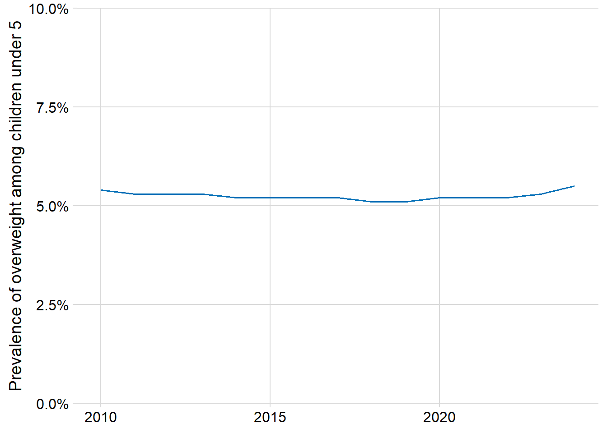

Prevalence of moderate or severe food insecurity… (47)
Severe food insecurity % (AG_PRD_FIESS)
Severe food insecurity n (AG_PRD_FIESSN)
Moderate or severe food insecurity n (AG_PRD_FIESMSN)
Moderate or severe food insecurity % (AG_PRD_FIESMS)
Prevalence of malnutrition (49)
Children moderately or severely wasted n (SH_STA_WASTN)
Children moderately or severely wasted % (SH_STA_WAST)
Children moderately or severely overweight n (SN_STA_OVWGTN)
Children moderately or severely overweight % (SN_STA_OVWGT)
Note: I think it would be helpful to explain the differences between all of these terms
Malnutrition: deficiencies, excesses, or imbalances in a person’s intake of energy and/or nutrients.
Food insecurity: when people lack secure access to sufficient amounts of safe and nutritious food for normal growth and development and an active and healthy life.
Undernourishment: people whose dietary energy consumption is continuously below a minimum dietary energy requirement for maintaining a healthy life and carrying out a light physical activity
While prevalence of moderate or severe food insecurity is lower than it’s been since 2019, it is still much higher than it’s been in this indicator’s history.
wasting_world |>ggplot(aes(x = year, y = value)) +geom_line(color ="#006fb7") +scale_y_continuous("Prevalence of wasting among children under 5", labels = scales::percent_format(scale =1), limits =c(0, 15), expand =c(0, 0)) +scale_x_continuous(NULL) +theme_minimal_grid()

Globally since 2010, improvement of 1.1% (not a huge change)
Show the code
wasting_regions <- wasting |>filter(!is.na(regionId)) |>left_join(regions, by =c("regionId"="id")) |>filter(level ==2) |>left_join(regions |>select(id, name) |>rename(parent_name = name), by =c("parentId"="id"))wasting_regions |>filter(year ==max(year)) |>ggplot(aes(y =fct_reorder(name, value), x = value)) +geom_col(aes(fill = parent_name)) +geom_text(aes(x = value + .1, label = scales::percent(value, accuracy = .1, scale =1)), size =3.5, hjust =0) +scale_fill_ghro("region") +scale_x_continuous("Prevalence of wasting among children under 5, 2024", labels = scales::percent_format(scale =1), expand =c(0, 0)) +scale_y_discrete(NULL) +theme_minimal_vgrid() +theme(legend.position ="top", plot.margin =margin(l =30, r =30)) +coord_cartesian(clip ="off")

regional values range from .2 in northern america, to 13.6% in southern asia (nearly double South-eastern Asia, the next highest regional value), but this is on a consistent downwards trend
No data for a good amount of Oceania, hence only Australia and New Zealand
Show the code
overwt <- datasets[["SN_STA_OVWGT"]] |>mutate(year =year(datetime))overwt_world <- overwt |>filter(regionId ==1, sexCode =="_T")overwt_world |>ggplot(aes(x = year, y = value)) +geom_line(color ="#006fb7") +scale_y_continuous("Prevalence of overweight among children under 5", labels = scales::percent_format(scale =1), limits =c(0, 10), expand =c(0, 0)) +scale_x_continuous(NULL) +theme_minimal_grid()

Mostly stagnant, but small increase since 2019 (2024 = highest since 2010)
Show the code
overwt_regions <- overwt |>filter(!is.na(regionId), year ==2024, sexCode =="_T") |>left_join(regions |>select(id, name, level, parentId), by =c("regionId"="id")) |>filter(level ==2) |>left_join(regions |>select(id, name) |>rename(parent_name = name), by =c("parentId"="id"))global_val <- overwt_world |>filter(year ==2024) |>pull(value)overwt_regions |>ggplot(aes(y =fct_reorder(str_wrap(name, 20), value), x = value)) +geom_col(aes(fill = parent_name)) +geom_text(aes(x = value + .1, label = scales::percent(value, accuracy = .1, scale =1)), size =3.5, hjust =0) +geom_vline(xintercept = global_val, linetype ="dashed", color ="grey40") +scale_fill_ghro("region") +scale_x_continuous("Prevalence of overweight among children under 5, 2024", labels = scales::percent_format(scale =1), expand =c(0, 0)) +scale_y_discrete(NULL) +theme_minimal_vgrid() +theme(legend.position ="top", plot.margin =margin(l =30, r =30)) +coord_cartesian(clip ="off")